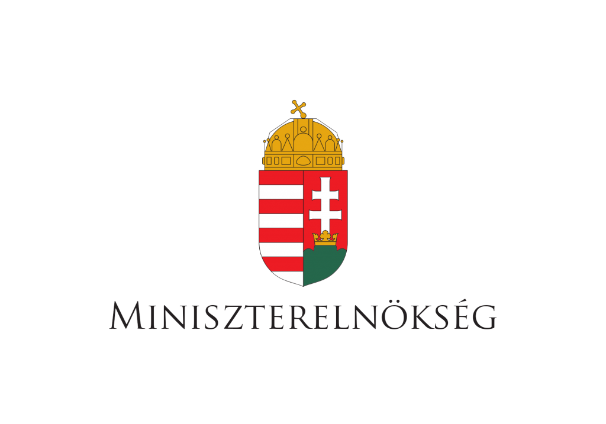
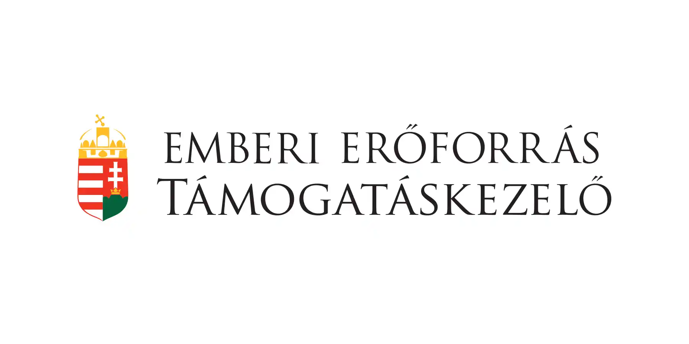
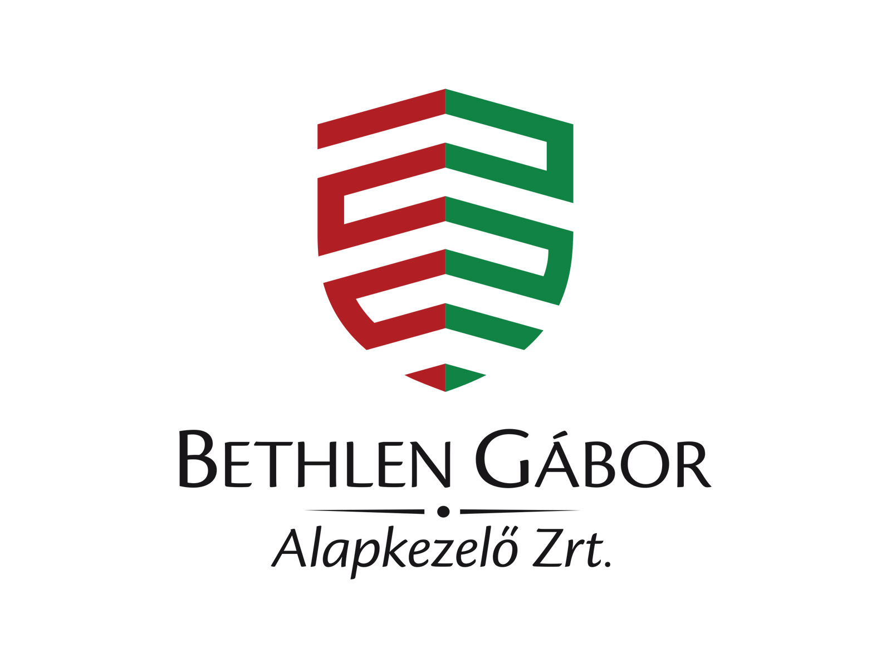
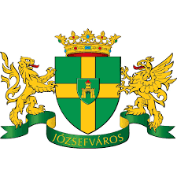

MÁRC
5
Online sématerápiás csoport
Ismétlődő belső és kapcsolati problémákkal küzdő személyeknek.
Pszichoterápiás-, rehabilitációs és lelki egészségfejlesztő célú szolgáltatások
KapcsolatfelvételIsmétlődő belső és kapcsolati problémákkal küzdő személyeknek.
Érzelmileg labilis személyek számára, érzelemszabályozási céllal.
Felépülésben lévő drog-, gyógyszer- vagy alkoholproblémával élők számára.
Figyelemzavarral és/vagy hiperaktivitással küzdő serdülők és felnőttek részére online.
Alacsony önértékeléssel, túlzott önkritikával és önostorozással küzdő személyek számára.
Stresszel, szorongással, lelki eredetű testi panaszokkal küzdők számára.
Relaxáció, stresszkezelés, szorongásoldás céljára.
Érzelmileg labilis (borderline) személyiségek számára.
Önismeretfejlesztő, probléma feldolgozó, feszültségoldó céllal.
Parkinzonos betegek hozzátartozói számára.
Szorongással és pánikkal élők számára.
A Nap Kör Munkacsoport majd Alapítvány - eddigi működése során - több ezer embernek nyújtott rövidebb vagy hosszú távú lelki segítséget.
Számos önsegítő csoport működését és négy új önsegítő csoport megszerveződését segítette elő.
120 segítő foglalkozású szakembert juttatott "mentálhigiénés szakember" diplomához a SE Mentálhigiéné Intézet kihelyezett képzőhelyeként.
Az eltelt idő alatt 100 körüli önkéntes segítőt képeztünk ki.
Akkreditált gyakorlati pszichoterápiás képzőhelyként folyamatosan fogadunk klinikai pszichológus és pszichoterápiás rezidenseket, ettől függetlenül is sok szakember veszi igénybe belső képzéseinket és szupervíziónkat. Kb. 100 főre tehető az Alapítvány szakmai közegében "felnevelkedett" pszichoterápiás szakemberek száma.
A lelki segítség nyújtás mellett 2008 óta tanulási zavarral küzdő serdülőket és felnőtteket is folyamatosan fogadunk, személyre szabott programmal segítünk, a Dr. Gyarmathy Éva által alapított Diszlexia Központunk keretei között.



